A few set of special buttons are dynamically drawn based on attributes.
Attributes are numerous to allow for design flexibility, however default values will always provide a usable representation.
The idea of drawn buttons came after the flexibility discovered when designing Annunciators. All annunciators are drawn buttons: Texts, frames, basic icons…
Switch¶
A Switch is a drawing of a two or three-way switch on an image key.
Switches are often used by On/Off activations.
They can be used in replacement of an icon.
Attributes¶
Ticks are marks on the side of the switch to label corresponding positions. The tick underline is the visual line line that connect all ticks.
switch:
switch-style: 3dot
tick-underline: true
tick-label-size: 36
tick-label-font: DIN Bold
tick-labels:
- "ON"
- "MID"
- "OFF"
options: 3way,horizontal
Switches, Circular Switches, and Push Switches have numerous attributes in common to control their appearance. See Circular Switches for a list.
Switch Model¶
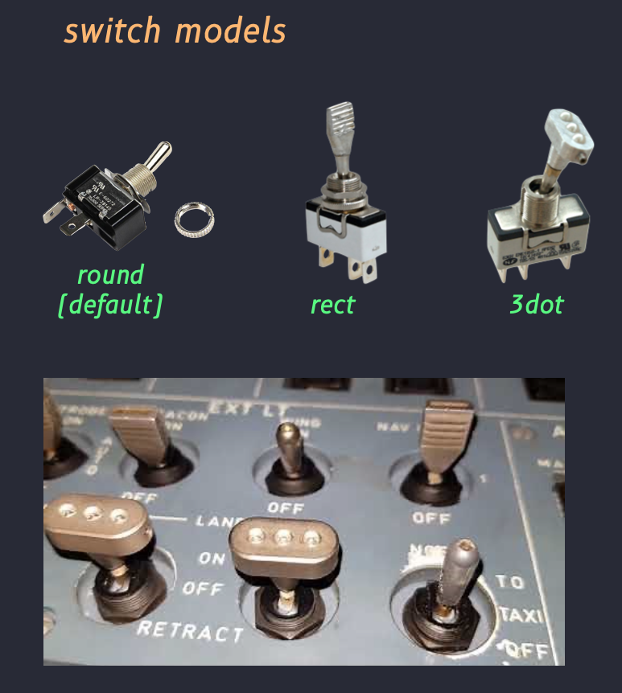
Switches as Drawn¶
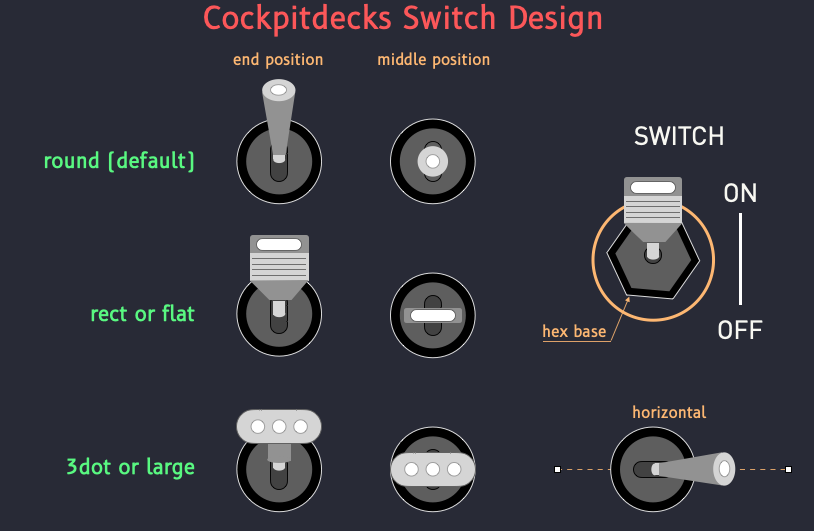
Options¶
options: 3way
Defines a switch with 3 positions, 2 extremities, and one middle position.
options: horizontal
Draws and manipulates the switch horizontally rather than vertically.
options: hexa
Draws an hexagonal base to mimic Airbus switch inserts and fixation instead of a round base (default).
options: invert
Inverts On and Off positions.
Circular Switch¶
A Circular Switch is a rotating knob/switch used to represent a rotation switch. It is displayed on an image key. Circular switches are often used by Up/Down activation to cycle and bounce through the set of possible values.
They can be used in replacement of multi-icons.
circular-switch:
switch-style: normal
down: 20
left: 20
tick-from: 135
tick-to: 315
tick-space: 20
tick-underline-width: 12
tick-color: red
tick-underline-color: red
needle-color: lime
needle-length: 130
tick-labels:
- "0"
- "1"
- "2"
- "3"
- "4"
- "5"
Attributes¶
- Button-size
- Button-stroke-color
- Button-fill-color
- Button-underline-color
- Button-underline-width
- Needle-color
- Needle-width
- Needle-underline-color
- Needle-underline-width
- Stops
- Tick-labels
- Label-font
- Label-color
- Label-size
- Tick-color
- Tick-width
- Thik-underline-color
- Thik-underline-width
- Label-space
- Thik-Space
- Top, bottom, left, right
Circular Switch Models¶
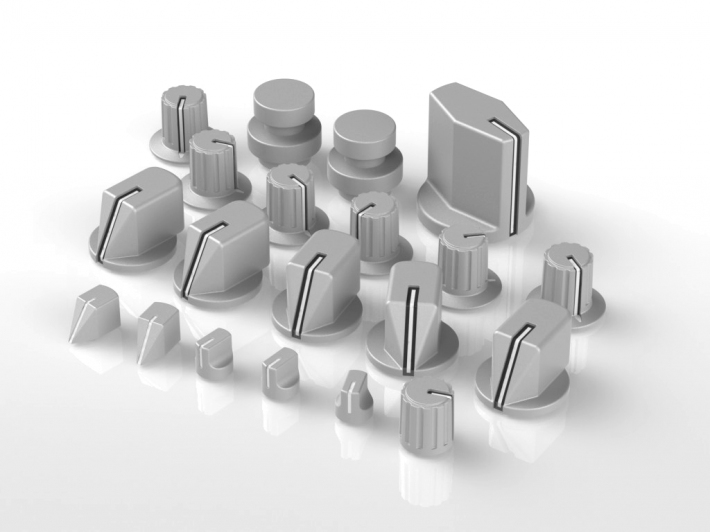
Circular Switches as Drawn¶
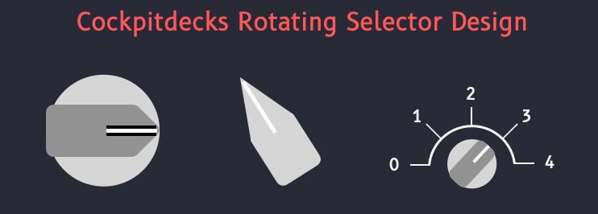
![[circular-switches.png]]
Push Button¶
button-sizebutton-colorbutton-off-colorwitness-fill-colorwitness-stroke-colorwitness-stroke-width
A PushButton is a simple button that can be used to trigger a command. It can be On or Off, and it's state can be reflected graphically by adjusting its color for instance.
Push Button Models¶
Later…
Push Bottons as Drawn¶
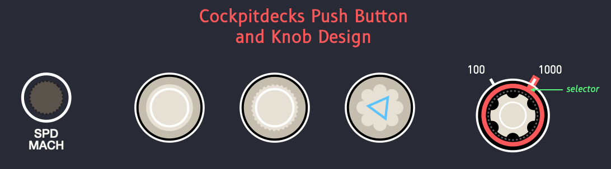
Knob¶
Knobs are circular rotating buttons used to set values by rotating the button clockwise or counterclockwise. Although they can be drawn and « turn » according to dataref values, they cannot currently be used with activations to trigger their rotation. Real, physical rotation knobs must be used instead. (Mimicking a rotation knob with a push button is a difficult task that requires awkward manipulations such as long pushes. We may later offer a possibility to allow for rotation knows on icon button, because the surface of some icon button (LoupedeckLive) reacts to touch and swipes. It would therefore be possible to detect precisely where the button was touched (left, right, up, center…) and assign activations accordingly.)
So we shall just say that Knob icons can be used as simple push button, with an alternative representation.
Data¶
A DataButton is a particular case of a display only button.
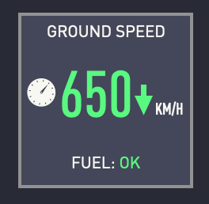
A DataButton displays four informations:
- A single letter or icon from a character font, (we can use icon fonts,)
- A value, and optionally the trend of the value (rising, decreasing, statuquo)
- A unit short text (static)
- An optional percentage bar of the value relative to a 100% value
- A small text string (typically ~20 characters maximum) called the bottom line.
- index: 4
name: Fuel Level
type: none
label: Fuel
label-size: 10
label-position: ct
data:
icon-name: "gas-pump"
data: 75.4256
data-format: "{:02.0f}"
data-font: DIN Condensed Light
data-size: 24
data-unit: "%"
data-progress: 100
data-trend: 0
dataref-rpn: ${sim/aircraft/fuel_level} 10 *
bottomline: Go Faster
Data button representation aims at providing a dashboard-like single value highlighted in a deck key image, very much like common web dashboards.
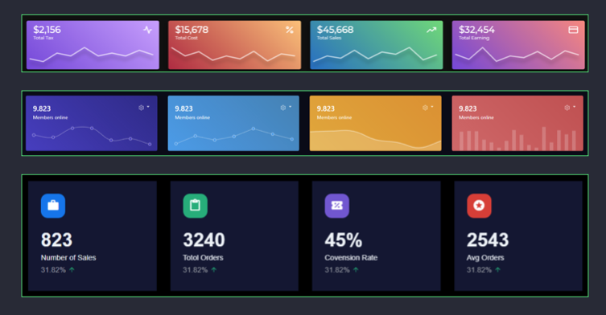
Decor¶
Decor representation displays simple connected lines to populate unused icons. They can be used to display visual helper lines that connect annunciators (bleed air, hydraulics, etc.) The idea behind Decor icons is to provide a quick alternative to blank icons when filling large decks with numerous keys.
Decor icon are governed by two parameters type and code. The type is a category of drawings. The code determine which drawing will be made in that category.
Lines¶
type: line
Decor icons of type line display a single horizontal or vertical line, and corner angles. The code determine which line get drawn.
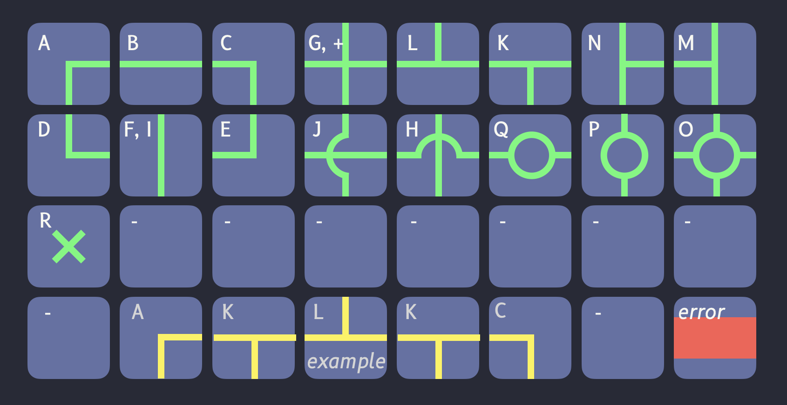
type: line
code: H
Segments¶
type: segment
Decor icons of type segment display segments that are present in the code attribute.
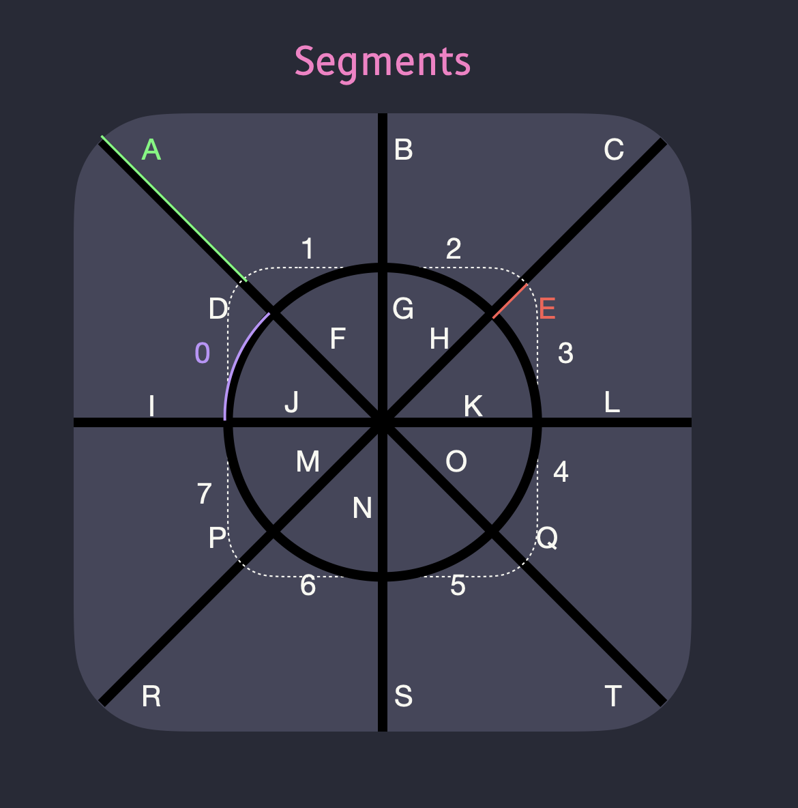
For example:
type: segment
code: BGNSIL0123
will light (turn on) segments B, G, N... 3, which correspond will result in a drawing like the one proposed by the
H code in type line above.
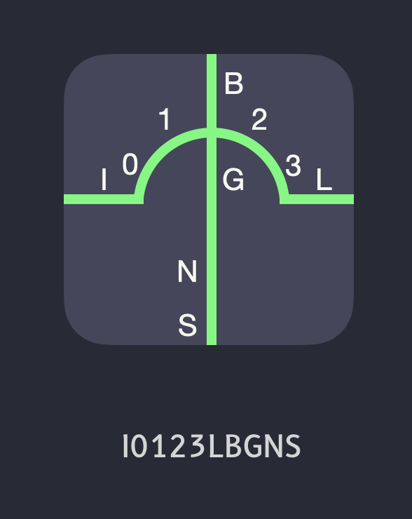
Common Decor Attributes¶
Line width¶
width: 10
Width of the line.
Color¶
color: red
Color of the line.
Aircraft¶
The aircraft representation displays the name of the aircraft (ICAO type designator) located in the dataref: sim/aircraft/view/acf_ICAO. All 4 (or more) characters are fetched and displayed in the icon. (We currently limit fetching the first four characters only, which should be sufficient for ICAO aircraft code designator.)
The representation attribute is
aircraft:
text-font: B612-Bold
text-size: 32
If a set-dataref is present, the aircraft representation increases the value of that dataref by one each time the aircraft name changes in the sim/aircraft/view/acf_ICAO. This can be used by other button or by Cockpitdecks itself to be notified of an aircraft or aircraft model change.
Weather¶
(Please refer to the dedicated Weather Representation page.)
METAR¶
The WeatherButton is a special data button that displays METAR information of the station closest to the aircraft in a small, iconic representation.
- index: 8
name: METAR
type: weather
station: OTHH
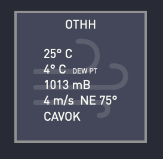
TAF¶
(To do. Cycle through forecast each time button is pressed.)